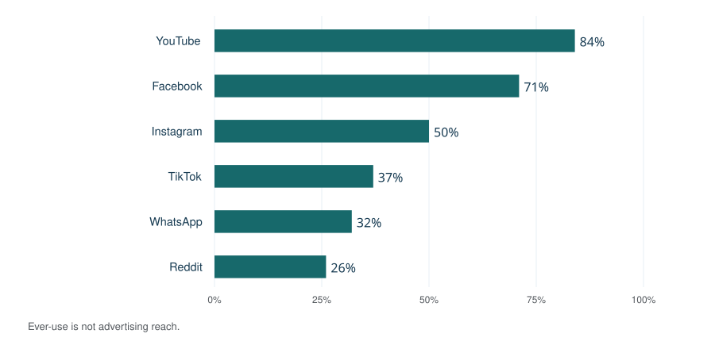
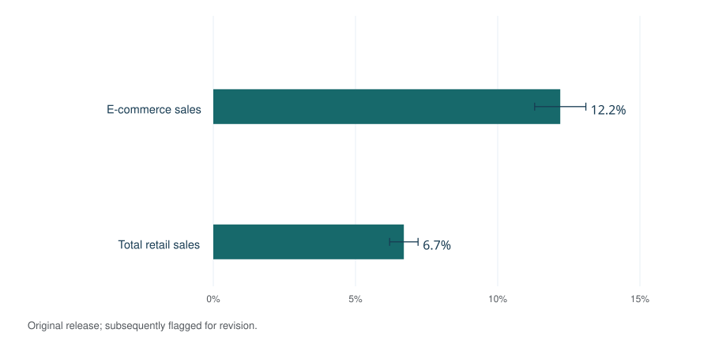
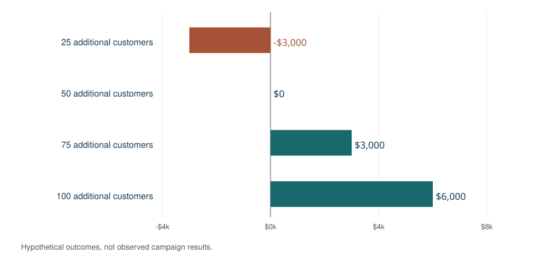

Marketing strategies are the coordinated choices a business makes about which customers to serve, what value to offer, how to compete and where to invest. A strategy connects customer needs with products, pricing, distribution, communication and measurable business goals. It gives individual campaigns a reason to exist and a way to judge whether they are helping. Modern teams may also use Coffee Cup AI resources on AI marketing strategies to support research and execution, but a coherent marketing strategy still provides the direction that keeps automation, campaigns and measurement aligned.
The American Marketing Association describes marketing broadly as creating, communicating, delivering and exchanging valuable offerings. That scope includes the product and customer experience as well as promotion. An advertising channel is one part of a marketing strategy; it does not settle the choices about audience, positioning or profitability.¹
A useful starting question is: Which customers can this business serve well, and why should those customers choose it? The answer should guide the message, the offer, the sales process and the budget. Digital and offline activities can then work toward the same outcome.
Contents
- Marketing strategy, marketing plan and tactics
- Market research, segmentation and target audiences
- Brand positioning, value propositions and competitive advantage
- Marketing frameworks and growth strategies
- Types of marketing strategies and channel choices
- How to build a marketing strategy and action plan
- Marketing statistics: audience, commerce and budgets
- Marketing performance, attribution and incrementality
- Marketing budgets, ROI and break-even analysis
- Marketing strategy examples for different businesses
- AI, personalization and marketing automation
- Responsible marketing: email, claims and disclosures
- Marketing strategy glossary
- Sources and notes
Marketing strategy, marketing plan and tactics
Strategy establishes direction. A marketing plan translates that direction into coordinated work. Tactics are the individual actions used to execute the plan. Confusing these levels can leave a team busy producing content and buying traffic without a clear reason to favor one activity over another.
| Level | Decision | Illustrative output |
|---|---|---|
| Strategy | Who to serve and how to win their preference | Focus on regional manufacturers that need dependable delivery. |
| Marketing plan | What work, resources and timing will support that choice | A six-month program combining buyer research, case studies and distributor outreach. |
| Campaign | A coordinated effort with a defined objective | Promote a new delivery guarantee to qualified purchasing teams. |
| Tactic | A specific action or asset | Publish a comparison page or invite buyers to a demonstration. |
The U.S. Small Business Administration recommends that a marketing plan cover the target market, competitive advantage, sales process, goals, action plan and budget. It also connects marketing with operations and customer support. Its guidance provides a useful checklist for turning an intended position into work that someone can schedule, fund and review.²
For a small team, this can fit into a short working document. A larger company may need separate plans for products, markets and business units. In either case, the plan should name the decision owner and the evidence that would justify changing direction. More pages do not make a strategy more coherent.
Market research, segmentation and target audiences
Customer needs, demand and competitive research
Research should reduce uncertainty about a purchase decision. Interviews can uncover what triggers a search, which alternatives buyers compare and why a sale stalls. Sales records can show order size, repeat purchases and returns. Support tickets can reveal the gap between the promise and the experience. Search data can identify questions, but search volume alone does not establish demand at a profitable price.
A practical research worksheet records the question, the available evidence, its limitations and the decision it affects. Separate a customer’s stated preference from actual purchasing behavior. Interview lost prospects as well as enthusiastic customers, and look for reasons people choose to do nothing. Competitors include substitutes and internal workarounds, not only businesses that sell the same product.
Segmentation, targeting and buyer personas
Segmentation divides a market into groups with relevant shared needs or behavior. OpenStax distinguishes geographic, demographic, behavioral and psychographic segmentation. Targeting chooses the groups a business will prioritize; positioning explains the value it intends to occupy in those customers’ minds. These choices work together, but they answer different questions.³
For business-to-business marketing, a useful segment may combine industry, company size, operating problem and buying process. For consumers, an occasion or desired outcome can be more actionable than a broad age bracket. A buyer persona should summarize evidence, not substitute an invented biography for research. Record the buyer’s job to be done, objections, information needs and decision criteria.
Before selecting a target audience, test four practical conditions: the need is meaningful, the group can be reached, the organization can deliver the promised value, and the economics can support acquisition and service. A large audience with little willingness to pay may be less attractive than a smaller group with an urgent problem. Avoid assuming that everyone within a demographic category has the same needs.
Brand positioning, value propositions and competitive advantage
Differentiation, cost and a credible promise
A value proposition explains the useful outcome an offering provides and why it is preferable to the alternatives. Positioning places that promise in a competitive context. Harvard Business School’s Institute for Strategy and Competitiveness describes differentiation and cost leadership as routes to competitive advantage. Distinctive value can support a premium price; an advantageous cost structure can support a different competitive position.⁴
A positioning statement can specify the priority customer, the problem, the category of solution, the main benefit and the evidence behind it. “Reliable service” is weak unless the business can explain what reliability means. A stated response window, a clear delivery process or a documented product test makes the promise easier to assess. The evidence should match the claim rather than decorate it.
Brand identity and consistent customer experience
Brand identity includes the name, visual system, tone and other recognizable signals. Brand strategy connects those signals to a meaningful promise. Consistency matters across a product page, an advertisement, a salesperson’s explanation and the experience after purchase. If the campaign promises simplicity but the purchase process is confusing, changing the logo will not resolve the mismatch.
Teams can use a message hierarchy: one central promise, a few supporting benefits and specific proof for each. Adapt the format to the channel while preserving the underlying meaning. The same product may need different explanations for a user, a financial approver and a procurement team. Those explanations should fit together instead of making incompatible promises.
Marketing frameworks and growth strategies
SWOT analysis and product-market choices
SWOT organizes internal strengths and weaknesses alongside external opportunities and threats. Growth planning also distinguishes selling more existing products in existing markets, developing new products, entering new markets and diversifying. OpenStax presents these categories as tools for considering strategic options. They organize questions; they do not calculate a winning choice.⁵
| Growth direction | Product / market choice | Original planning example |
|---|---|---|
| Market penetration | Existing offering, existing market | Improve repeat ordering for an established maintenance service. |
| Market development | Existing offering, new market | Offer the service in a nearby region after testing delivery capacity. |
| Product development | New offering, existing market | Add a monitoring subscription for current maintenance customers. |
| Diversification | New offering, new market | Enter a different service category for a different buyer group. |
Use the framework to expose dependencies. Expanding to another region may require distribution and support before advertising begins. A new product may need evidence of willingness to pay before a large launch. Record what must be true for each option to work, the cheapest credible test and the consequences of being wrong. This turns a workshop label into a decision.
The marketing mix: product, price, place and promotion
The four Ps describe connected choices about the offering, what buyers pay, how they obtain it and how it is communicated. OpenStax identifies product, price, place and promotion as the core marketing mix. Changing one element can affect the others: a premium promise needs a supporting product experience, while a low price must still support delivery costs.⁶
| Element | Decision to resolve | Evidence to examine |
|---|---|---|
| Product | Which problem and service level will the offering address? | Usage, product tests, support requests and returns. |
| Price | What price and terms fit value, costs and customer expectations? | Willingness to pay, contribution margin and competitor alternatives. |
| Place | Where and how can customers buy and receive the offering? | Channel access, delivery coverage and purchase friction. |
| Promotion | Which messages and channels make the offer understandable? | Customer questions, creative tests and qualified response. |
The mix also helps diagnose problems that promotion cannot fix. If inventory is unreliable, more demand can create more disappointed buyers. If customers do not understand the pricing, a clearer offer may be more useful than a new advertising platform. Review the whole experience before treating every sales problem as a traffic problem.
Types of marketing strategies and channel choices
Channel selection should follow the audience and buying process. A strategy may combine demand creation, demand capture, retention and referral activity. The following comparison is a practical planning taxonomy; the categories overlap and are not a ranking of universal effectiveness.
| Approach | Useful role | Main planning constraint |
|---|---|---|
| Content marketing | Explain problems, options and evidence | Requires useful expertise and a way to distribute the content. |
| SEO | Help people discover relevant information through organic search | Requires crawlable pages and content that satisfies the search. |
| Social media and video | Build familiarity, demonstrate products and support conversation | Audience presence does not establish purchase intent. |
| Email and lifecycle marketing | Help opted-in audiences progress or return | Needs relevant timing, list quality and appropriate permissions. |
| Paid search and paid social | Purchase distribution and test offers | Costs, conversion quality and incrementality need monitoring. |
| Influencer and affiliate marketing | Reach audiences through publishers or creators | Claims, incentives and disclosures need clear responsibility. |
| Events, public relations and partnerships | Create relationships, credibility or access | Attribution may take longer and follow-up needs ownership. |
| Referral and customer retention | Support repeat business and recommendations | The underlying customer experience must support the request. |
Content marketing and search engine optimization
A content strategy specifies which questions to answer, for whom, in what format and how the answer will help a decision. Useful formats include comparison pages, demonstrations, original research, case studies, calculators and instructional videos. The distribution plan matters as much as the production calendar: an unused resource cannot help a buyer.
Google’s SEO Starter Guide emphasizes helping search engines understand content and helping people decide whether a result is useful. Crawlable navigation, descriptive titles, accessible page resources and useful writing support that work. A sitemap can help discovery, but neither a sitemap nor a specific page length guarantees indexing or rankings.⁷
Social media marketing, video and community
Choose social platforms according to audience behavior, the format the team can sustain and the kind of interaction the offer needs. YouTube can host demonstrations; Instagram and TikTok can support visual storytelling; LinkedIn can support professional discussion. These are possible uses, not claims that a platform always performs best for a given industry. Test the actual audience and creative.
Distinguish paid distribution, organic publishing and community management. They require different resources. A video that generates views may still fail to explain the offer. A small discussion may reveal a valuable objection even when it produces few immediate sales. Define what each activity is intended to contribute before comparing its metrics.
Email marketing, CRM and customer retention
Customer relationship management, or CRM, connects relevant customer information with follow-up. A lifecycle program can include onboarding, education, replenishment, renewal and reactivation. Each message should have a clear purpose and a suitable audience. Suppress messages after the customer takes the requested action, and keep service communications distinguishable from promotions.
Measure retention by customer cohort and a defined period. A repeat order, a subscription renewal and an expanded contract are different outcomes. Avoid treating every returning customer as proof that a reminder caused the purchase. Where practical, compare outcomes with a suitable holdout group and include the cost of incentives.
Paid advertising, partnerships and offline channels
Paid search can reach people expressing a need; paid social can distribute a message to a selected audience. In both cases, a campaign needs a relevant offer, a usable destination and a way to distinguish qualified outcomes from cheap clicks. Retargeting can reach previous visitors, but those visitors may already be more likely to buy.
Offline channels remain options when they match the buying situation. Trade shows, local events, direct mail, distributor programs and sponsorships can support access or trust. Partnership and affiliate agreements should define the audience, permitted claims, compensation, data handling and how outcomes will be measured. An effective mix depends on the business rather than the novelty of the channel.
How to build a marketing strategy and action plan
Goals, KPIs and the customer journey
Start with a business outcome and specify the time period, baseline and population. “Increase qualified sales opportunities among regional manufacturers” is more useful than “get more engagement,” but it still needs a measurable definition. Set a goal that the team can connect to revenue quality, retention or another meaningful outcome. SMART goals are specific, measurable, achievable, relevant and time-bound.
Map the customer journey from first recognition of a problem through evaluation, purchase, onboarding and repeat use. The map is a planning aid; actual buyers may skip steps or return to earlier questions. For each stage, record the uncertainty the customer is trying to resolve, the useful evidence and the next reasonable action. Avoid forcing every visitor toward a sales conversation before they understand the offer.
A practical planning sequence
- Diagnose the situation. Collect customer, market, competitor and operating evidence.
- Choose the priority audience. State the need, buying process and reasons to focus.
- Define the value proposition. Connect the promise to credible evidence and delivery capability.
- Set the objective and measurement. Specify the baseline, desired change, time period and guardrails.
- Build the channel and content plan. Give each activity a role in the customer journey.
- Allocate budget and owners. Include creative, technology, staff time and measurement costs.
- Test, review and revise. Decide in advance what would justify continuing, changing or stopping.
A working brief can fit these decisions on one page and link to the supporting analysis. Keep a decision log so the next review can distinguish a failed assumption from weak execution. If a launch misses its target, ask whether the audience, offer, distribution, sales process or measurement was responsible. Changing all of them at once makes learning harder.
Set a review rhythm that fits the purchase cycle. A short online transaction can provide feedback sooner than a complex enterprise sale. Monitor obvious delivery failures promptly, but give slower outcomes time to mature. Agree on how to handle seasonality, incomplete data and delayed conversions before declaring a campaign successful.
Marketing statistics: audience, commerce and budgets
Social platform use and audience differences
Pew Research Center surveyed 5,022 U.S. adults from February 5 to June 18, 2025. Reported ever-use was 84% for YouTube, 71% for Facebook, 50% for Instagram, 37% for TikTok, 32% for WhatsApp and 26% for Reddit. Instagram use differed sharply by age: 80% among adults ages 18–29 compared with 19% among those 65 and older. These figures describe platform use, not daily attention, purchasable advertising reach or campaign conversion rates.⁸
Social platform use among U.S. adults

The planning implication is to check audience fit below the national average. A large platform may offer access to many people but still be an inefficient route to a particular customer. People also use multiple platforms, so summing the bars would double-count users.
Retail e-commerce: preserve the release date
The Census Bureau’s original August 18, 2026 release estimated second-quarter U.S. e-commerce sales at $340.2 billion and total retail sales at $1,986.5 billion, seasonally adjusted but not adjusted for price changes. E-commerce represented 17.1% of total retail sales. Year-over-year growth was 12.2% for e-commerce and 6.7% for total retail. The release reported respective uncertainty intervals of ±0.9 and ±0.5 percentage points for those growth estimates.
Census added a September 28 notice stating that the release no longer contained the most up-to-date estimates, with revised figures scheduled for the November 19 release. The figures below preserve the original publication vintage and should not be described as the latest revised totals.⁹
Retail growth in the original Q2 2026 release

Online sales growth can inform distribution planning, but it does not prove that a particular advertising channel caused the growth. E-commerce is part of total retail, and the figures do not cover every service business or the whole economy. An omnichannel plan still needs to consider how discovery, purchase, pickup, delivery and support connect.
Marketing budgets and different denominators
Gartner’s June 2026 public CMO spending summary reported marketing budgets averaging 7.8% of company revenue. It also reported paid media at 31.4% of marketing budgets, AI at 15.3% of budgets and mature AI readiness among 30% of CMOs. These measures have different denominators and should not be added together. The public summary does not establish a suitable budget for a particular small business.¹⁰
| Reported measure | Value | What the denominator means |
|---|---|---|
| Marketing budget | 7.8% | Company revenue in the surveyed cohort. |
| Paid media allocation | 31.4% | Marketing budget, not company revenue. |
| AI allocation | 15.3% | Budget allocation reported in Gartner’s summary. |
| Mature AI readiness | 30% | CMOs reporting readiness, not share of spending. |
Benchmarks help frame questions about resources. They do not replace a business case. A new launch, an established subscription business and a low-margin distributor may need different allocations even when they have similar revenue.
Marketing performance, attribution and incrementality
A scorecard that connects activity to outcomes
| Metric | Working definition | Interpretation limit |
|---|---|---|
| Conversion rate | Completed target actions divided by eligible visits or users | Specify the action, denominator and time window. |
| Customer acquisition cost (CAC) | Defined acquisition costs divided by new customers | State which staff, media and technology costs are included. |
| Return on ad spend (ROAS) | Revenue attributed to ads divided by ad spend | Revenue is not contribution profit, and attribution is not causality. |
| Customer lifetime value (CLV) | Estimated contribution over a customer relationship | Depends on margin, retention, service costs and forecast horizon. |
| Retention rate | Share of a starting customer cohort retained over a period | Exclude new customers from the starting cohort calculation. |
| Incremental lift | Outcome difference attributable to an intervention | Requires a credible comparison with what would have happened otherwise. |
Use leading indicators to understand delivery and lagging indicators to judge outcomes. Reach, clicks and engagement can reveal whether a message was seen or acted on. Qualified opportunities, incremental sales and contribution help assess business value. A dashboard should make the relationship explicit rather than placing unrelated numbers side by side.
Why experiments matter
A 2019 Marketing Science study compared observational advertising measurements with 15 U.S. Facebook experiments, covering 500 million user-experiment observations and 1.6 billion impressions. The authors found that observational methods often failed to reproduce randomized experimental effects despite extensive demographic and behavioral information. The observation count is not a count of unique people, and the study does not establish today’s return for any channel.¹¹
The practical issue is selection: people who see or click an advertisement may differ from people who do not. A holdout experiment can help estimate the additional outcome caused by an intervention. Define the unit of randomization, primary outcome, duration and analysis before launch. Consider spillovers, cross-device behavior and whether the test can detect an economically meaningful change. A small inconclusive test is not proof of no effect.
Marketing mix modeling and cross-channel analysis
Marketing mix modeling estimates relationships between outcomes and marketing inputs over time. Google’s open-source Meridian framework supports channel contribution estimates, response curves and budget scenarios, with controls and explicit modeling assumptions. It can incorporate geographic information and experimental knowledge. Its outputs remain estimates conditional on data, priors and causal assumptions; installing a model does not validate those assumptions.¹²
Use attribution for an operational view of touchpoints, experiments for selected causal questions and mix modeling where the data and decision justify it. Compare their conclusions rather than assuming that every method must assign identical credit. Keep a record of measurement changes so an apparent performance improvement is not merely a revised attribution window.
Marketing budgets, ROI and break-even analysis
Allocate resources by objective and constraint
A budget should include media, content production, design, software, agencies, staff time, research and measurement. Separate one-time setup from recurring costs. Protect the work required to deliver the promise: customer support, inventory and sales follow-up can limit what additional demand is worth. Reserve flexibility to stop weak tests and fund stronger evidence.
There is no universal percentage split between brand building and immediate acquisition. Longer-term familiarity and short-term response can support each other, but their effects appear on different schedules. A review should consider both current contribution and whether the business is building the capabilities and customer relationships it will need later.
Worked example: revenue is not profit
Consider an illustrative campaign with $4,000 in media cost and $2,000 in creative and management costs. Total marketing cost is $6,000. Assume each additional customer contributes $120 after product and variable service costs, before marketing, fixed overhead and tax. At 75 additional customers, contribution before marketing is $9,000; after marketing it is $3,000. The return on the defined marketing cost is 50%.
Break-even requires $6,000 ÷ $120 = 50 additional customers. If contribution per customer falls to $80, break-even rises to 75. If a platform attributes 100 customers but only 40 are truly additional, the campaign produces $4,800 in contribution and loses $1,200 against the $6,000 cost. That last comparison shows why attribution and incrementality can lead to different decisions.
Illustrative campaign contribution after marketing cost

These are arithmetic scenarios, not market benchmarks or promised results. A real analysis should include refunds, discount costs, service capacity and the time value of delayed returns where material. Model repeat purchases separately rather than assuming that every new customer will remain indefinitely.
Marketing strategy examples for different businesses
Small business and local services
An illustrative local repair business could prioritize customers who value reliable scheduling. Its strategy would connect a clear service area and appointment promise with local discovery, useful service explanations and follow-up after the job. The team could measure completed appointments, contribution per job and repeat business. Reviews and referrals would support the promise only when the service experience warrants them.
The first constraint might be technician capacity rather than awareness. In that situation, increasing call volume before improving scheduling could create missed appointments. A small-business plan should identify the operational bottleneck before choosing between local SEO, search advertising, community partnerships and customer reminders.
B2B services and account-based marketing
An illustrative industrial software company could focus on a defined set of manufacturers with a costly maintenance problem. Account-based marketing would coordinate research, relevant content, events and sales outreach around those organizations. The message might differ for an operator, an IT reviewer and a finance approver while relying on the same documented product capability.
Useful measures would include qualified account engagement, progression through agreed buying stages and eventual contribution from new contracts. A downloaded document is a signal of interest, not a completed sale. The plan should specify how marketing and sales share information, what qualifies an opportunity and how long outcomes need to mature.
Consumer products and e-commerce
An illustrative outdoor-products retailer could combine educational video, search discovery, product comparisons and post-purchase care instructions. Product availability, delivery terms and return information would be part of the offer. A launch plan might test whether shoppers understand a distinctive feature before increasing paid distribution.
The scorecard could include contribution after discounts and returns, new-customer acquisition, repeat purchase and customer-service issues. A campaign that raises sales while increasing returns may need a clearer promise or better audience selection. These examples describe decision patterns; they are not case studies claiming measured results.
AI, personalization and marketing automation
AI can assist with drafting, analysis, classification and creative variation. Marketing automation can coordinate repeatable steps such as segmentation, reminders and campaign reporting. The strategic question remains which customer problem or operating constraint the tool will help address. Generating more messages is not a useful objective when the offer or audience is unclear.
In an August 2026 AMA recap of The CMO Survey, the authors described responses from 308 senior marketing leaders. Reported AI uses included content creation (73.9%), personalization (65.4%), automation (48.9%), data analysis (46.3%) and targeting (45.2%). Companies using AI reported sales-productivity gains of 14.1%, customer-satisfaction gains of 10.8% and a 14.6% reduction in marketing overhead. These are reported survey outcomes, not experimental estimates of what AI will cause in another company.¹³
A practical implementation should name the task, the permitted data, the human reviewer and the quality standard. For a content workflow, check facts, claims, rights and brand consistency before publication. For personalization, check whether the information was collected appropriately and whether the inference is reliable. For automated decisions, keep a way to inspect, correct and stop the workflow.
Measure the complete process. Time spent reviewing and correcting output belongs in the cost calculation. Compare quality as well as speed, and test whether a new workflow improves the customer’s experience. A campaign platform or language model is a tool within the strategy, not the owner of its objectives.
Responsible marketing: email, claims and disclosures
Commercial email and customer choice
The FTC’s CAN-SPAM guidance covers commercial email, including business-to-business messages. It addresses accurate sender information and subject lines, appropriate ad identification, a valid postal address and a clear opt-out mechanism. Its guidance requires honoring opt-out requests within 10 business days. These federal requirements do not describe every rule that could apply to a specific audience or use of personal information.¹⁴
A responsible operating process assigns ownership of list quality, suppression requests and message review. A CRM record is not proof that every proposed use of the information is appropriate. Review the actual collection context, audience and communication before launching a program, particularly when combining data from multiple systems.
Influencer relationships and supportable claims
FTC staff guidance says endorsements should make material connections to a brand clear. Those connections can include payment, employment, family relationships or free products. Disclosures should be noticeable and understandable alongside the endorsement. A platform’s built-in label may not be sufficient on its own.¹⁵
Claims should be no stronger than the evidence behind them. Keep the population, period and conditions attached to a statistic, and label illustrative scenarios. Review testimonials for context and avoid presenting selected experiences as guaranteed outcomes. A clear message can be persuasive while still giving the customer an accurate basis for deciding.
Marketing strategy glossary
- Marketing strategy
- A coordinated set of choices about customers, value, competition and resources.
- Marketing plan
- The work, responsibilities, timing and budget used to execute a strategy.
- Target audience
- The people a communication or program is intended to reach.
- Segmentation
- Dividing a market into groups with relevant shared characteristics or needs.
- Positioning
- The value and competitive place an offering is intended to occupy for a chosen audience.
- Value proposition
- An explanation of the useful outcome and reason to choose an offering.
- Marketing mix
- The connected decisions about product, price, place and promotion.
- Content marketing
- Creating and distributing useful material to help a defined audience.
- SEO
- Work that helps search engines discover and understand relevant website content.
- CRM
- Customer relationship management: processes and systems supporting customer information and interactions.
- Customer journey
- A model of customer needs and actions across discovery, evaluation, purchase and continued use.
- CAC
- Customer acquisition cost, calculated using a stated cost scope and customer definition.
- CLV
- Customer lifetime value: an estimate of contribution over a defined relationship horizon.
- ROAS
- Return on ad spend: attributed revenue divided by advertising spend.
- Incrementality
- The additional outcome caused by an intervention relative to a credible counterfactual.
- A/B test
- A comparison of assigned variants intended to estimate their effect on a defined outcome.
- Marketing mix modeling
- Statistical analysis of outcomes and marketing inputs over time, with assumptions and controls.
- KPI
- A key performance indicator selected to track progress toward an objective.
Related reading: the research and resources page groups the supporting sources by subject. The revision history records this edition and the source dates.